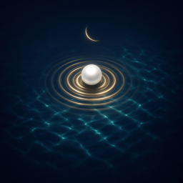

Durr
Kıble Pusulası · Qibla Compass
Destek
Durr, dünyanın her yerinde internet olmadan kıbleyi gösteren bir pusuladır. Soru, öneri ya da sorun bildirmek için bize yazın:
Kıble yönü doğru mu?
Kıble, bulunduğunuz yerden Kâbe’ye en kısa yol (büyük daire) üzerinden hesaplanır ve gerçek kuzeye göre gösterilir. Kontrol etmek için Apple’ın Pusula uygulamasında Ayarlar › Pusula › “Gerçek Kuzey”i açıp aynı açıyı karşılaştırabilirsiniz.
Yön kayıyor ya da “kalibre et” uyarısı çıkıyor
- Telefonu havada birkaç kez 8 çizer gibi hareket ettirin.
- Mıknatıslı kılıf, araç tutucu, hoparlör ve büyük metal eşyalardan uzaklaşın.
- Telefonu yere paralel, düz tutun.
Konum izni neden gerekiyor?
Kıble açısı bulunduğunuz yere göre değişir. Konumunuz yalnızca telefonunuzda kullanılır, hiçbir yere gönderilmez. İzin verilmezse son bilinen konumla çalışmaya devam eder.
İnternet gerekir mi?
Hayır. Tüm hesaplamalar cihazda yapılır; GPS internet olmadan da çalışır. Yalnızca isteğe bağlı destek (bağış) için internet gerekir.
Ses çalmıyor
Sağ üstteki hoparlör simgesinin açık olduğundan ve telefonun sessiz modda olmadığından emin olun.
Destek (bağış)
Durr ücretsizdir. Uygulama içindeki kalp simgesinden isteğe bağlı destek olabilirsiniz; destek hiçbir özelliğin kilidini açmaz. Ödemeler Apple tarafından işlenir; iade talepleri için reportaproblem.apple.com adresini kullanabilirsiniz.
Support
Durr is a compass that shows the Qibla anywhere on Earth, without an internet connection. For questions, suggestions or problems, write to us:
Is the Qibla direction accurate?
The Qibla is calculated along the shortest (great-circle) path from your location to the Kaaba and shown relative to true north. To check, turn on Settings › Compass › “Use True North” and compare the same angle in Apple’s Compass app.
The direction drifts or a “calibrate” hint appears
- Move your phone in a figure-eight a few times.
- Keep away from magnetic cases, car mounts, speakers and large metal objects.
- Hold the phone flat, parallel to the ground.
Why does it need my location?
The Qibla angle depends on where you are. Your location is used only on your phone and is never sent anywhere. Without permission, the app keeps working with your last known location.
Does it need the internet?
No. Everything is calculated on your device, and GPS works offline. The internet is only needed for optional tips.
No sound
Make sure the speaker icon at the top right is on and your phone isn’t in silent mode.
Tips
Durr is free. You can optionally support the developer from the heart icon in the app; tips don’t unlock anything. Payments are processed by Apple; for refunds, visit reportaproblem.apple.com.